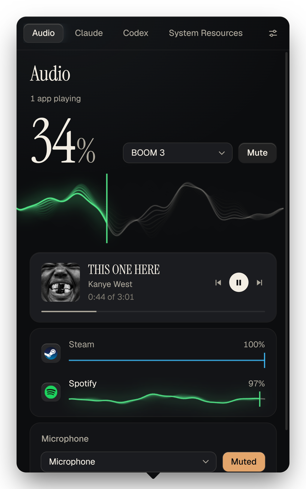
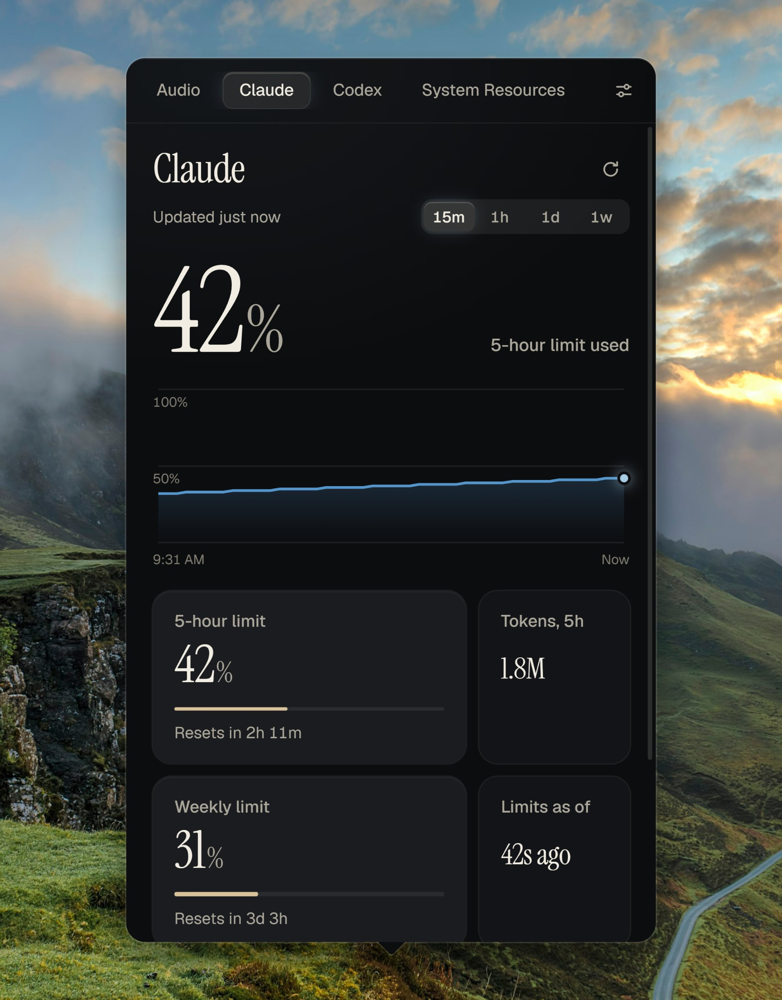
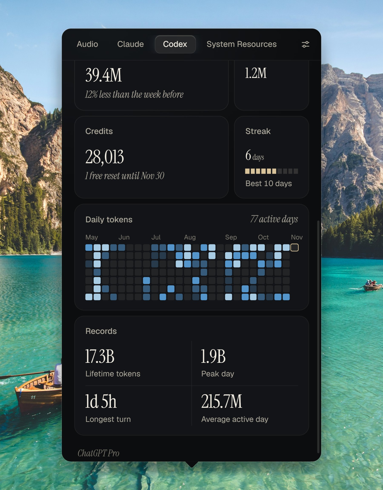
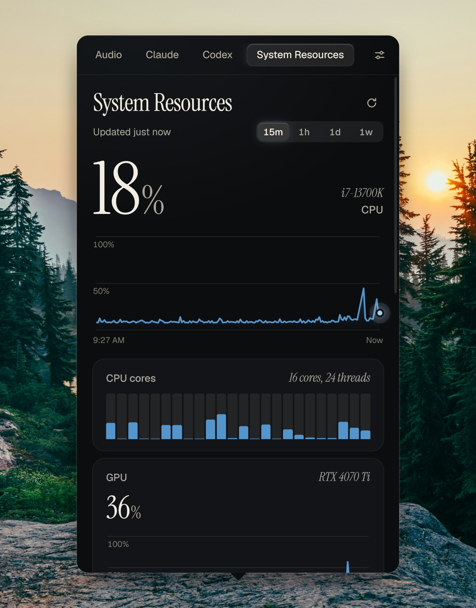
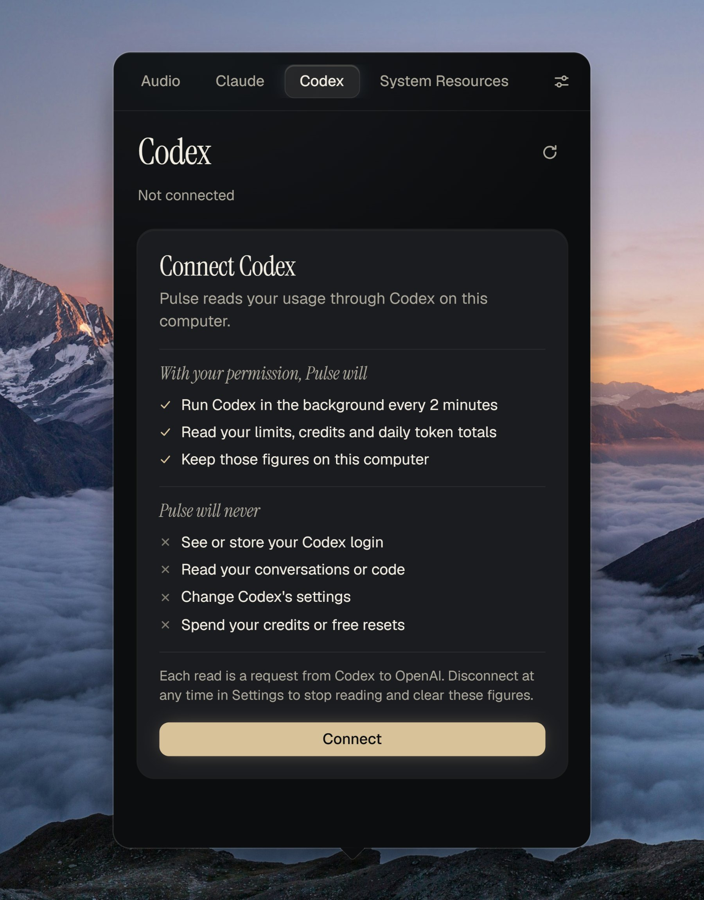

Both Claude limits, always in view.
Your 5-hour and weekly limits, when each one resets, and the tokens you have used.
Your computer, your Claude limits and your Codex limits, one click from anywhere on Windows.
Download for WindowsFree and open source.

Up to 21x smaller than other Windows trackers.1



62%
Headphones
Music80%
Browser55%
Game40%

Your 5-hour and weekly limits, when each one resets, and the tokens you have used.
Pulse charts each Codex limit against an even pace and shows when you would run out, with 26 weeks of daily use below it.
CPU, every core, GPU, memory, disks and network. Any number can show on the tray icon.
Set each app's volume, switch devices and control what is playing. Each app's line follows its own sound. Drag the faders. The sound in this demo is simulated.
Pulse lists what it will read and what it will never do before you connect. It never sees your login.
CtrlAltP
Choose your own shortcut in Settings.
Download for WindowsWindows may show a SmartScreen notice because Pulse is a new app. Choose More info, then Run anyway. You can check your download against its SHA-256 checksum. Claude tracking needs Claude Code, and Codex tracking needs Codex signed in with ChatGPT.